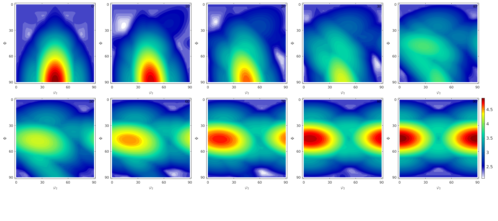
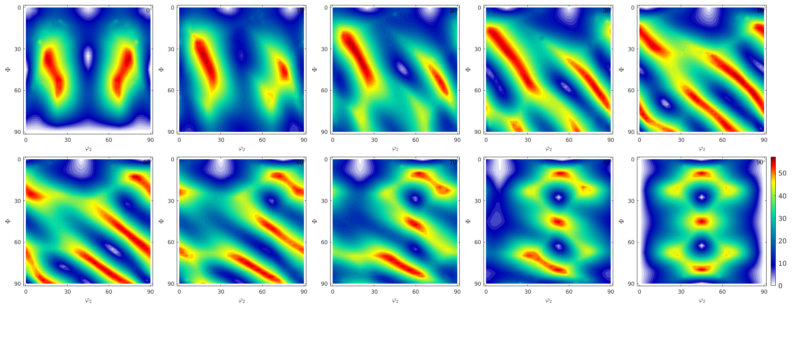
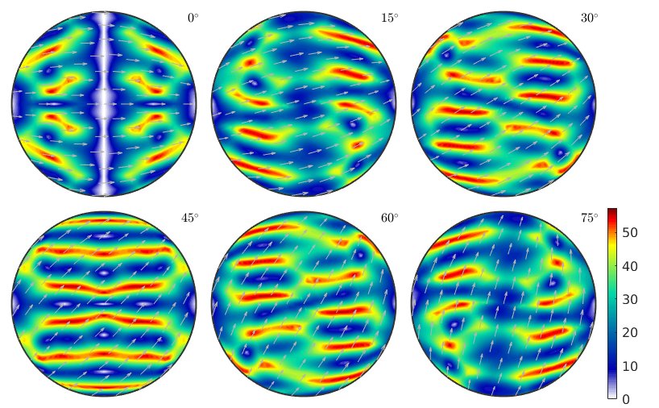
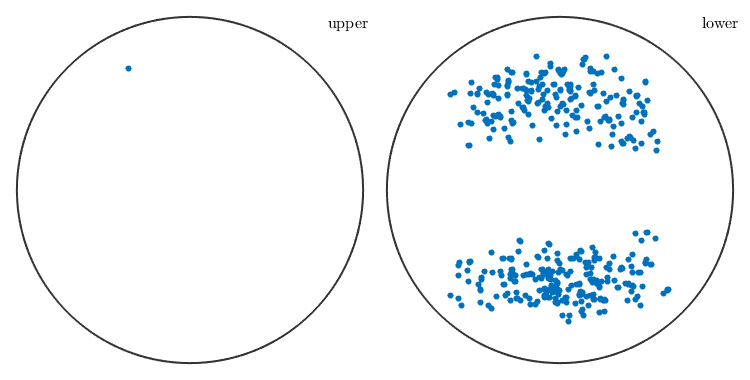
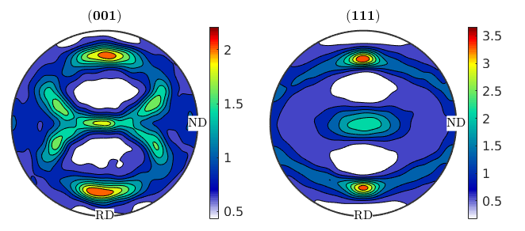
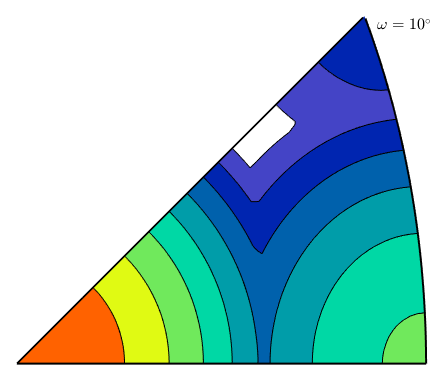

Taylor Model
% display pole figure plots with RD on top and ND west plotx2north storepfA = getMTEXpref('pfAnnotations'); pfAnnotations = @(varargin) text(-[vector3d.X,vector3d.Y],{'RD','ND'},... 'BackgroundColor','w','tag','axesLabels',varargin{:}); setMTEXpref('pfAnnotations',pfAnnotations);
Set up
consider cubic crystal symmetry
cs = crystalSymmetry('432'); % define a family of slip systems sS = slipSystem.fcc(cs); % some strain q = 0; epsilon = tensor.diag([1 -q -(1-q)],'name','strain') % define a crystal orientation ori = orientation('Euler',0,30*degree,15*degree,cs) % compute the Taylor factor [M,b,mori] = calcTaylor(inv(ori)*epsilon,sS.symmetrise);
epsilon = strain tensor
rank: 2 (3 x 3)
1 0 0
0 0 0
0 0 -1
ori = orientation
size: 1 x 1
crystal symmetry : 432
specimen symmetry: 1
Bunge Euler angles in degree
phi1 Phi phi2 Inv.
0 30 15 0
The orientation dependence of the Taylor factor
The following code reproduces Fig. 5 of the paper of Bunge, H. J. (1970). Some applications of the Taylor theory of polycrystal plasticity. Kristall Und Technik, 5(1), 145-175. http://doi.org/10.1002/crat.19700050112
% set up an phi1 section plot sP = phi1Sections(cs,specimenSymmetry('222')); sP.phi1 = (0:10:90)*degree; % generate an orientations grid oriGrid = sP.makeGrid('resolution',2.5*degree); oriGrid.SS = specimenSymmetry; % compute Taylor factor for all orientations tic [M,~,mori] = calcTaylor(inv(oriGrid)*epsilon,sS.symmetrise); toc % plot the taylor factor sP.plot(M,'smooth') mtexColorbar
computing Taylor factor: 100% Elapsed time is 122.745538 seconds.
The orientation dependency of the rotation value
Compare Fig. 8 of the above paper
sP.plot(mori.angle./degree,'smooth')
mtexColorbar sP = sigmaSections(cs,specimenSymmetry); oriGrid = sP.makeGrid('resolution',2.5*degree); [M,~,mori] = calcTaylor(inv(oriGrid)*epsilon,sS.symmetrise); sP.plot(mori.angle./degree,'smooth') mtexColorbar
computing Taylor factor: 100%
Most active slip direction
mtexdata csl grains = calcGrains(ebsd('indexed')); % remove small grains grains(grains.grainSize <= 2) = []
grains = grain2d
Phase Grains Pixels Mineral Symmetry Crystal reference frame
-1 527 153693 iron m-3m
Properties: GOS, meanRotation
% some strain q = 0; epsilon = tensor.diag([1 -q -(1-q)],'name','strain') sS = symmetrise(slipSystem.fcc(grains.CS)); [M,b,mori] = calcTaylor(inv(grains.meanOrientation)*epsilon,sS);
epsilon = strain tensor rank: 2 (3 x 3) 1 0 0 0 0 0 0 0 -1 computing Taylor factor: 100%
% colorize grains according to Taylor factor plot(grains,M) mtexColorbar % index of the most active slip system - largest b [~,bMaxId] = max(b,[],2); % rotate the moste active slip system in specimen coordinates sSGrains = grains.meanOrientation .* sS(bMaxId); % visualize slip direction and slip plane for each grain hold on quiver(grains,sSGrains.b,'autoScaleFactor',0.5,'displayName','Burgers vector') hold on quiver(grains,sSGrains.n,'autoScaleFactor',0.5,'displayName','slip plane trace') hold off

plot the most active slip directions observe that they point all towards the lower hemisphere - why? they do change if q is changed
figure(2) plot(sSGrains.b)
Texture evolution during rolling
% define some random orientations ori = orientation.rand(10000,cs); % 30 percent strain q = 0; epsilon = 0.3 * tensor.diag([1 -q -(1-q)],'name','strain'); % numIter = 50; progress(0,numIter); for sas=1:numIter % compute the Taylor factors and the orientation gradients [M,~,mori] = calcTaylor(inv(ori) * epsilon ./ numIter, sS.symmetrise); % rotate the individual orientations ori = ori .* mori; progress(sas,numIter); end
computing Taylor factor: 100% progress: 2% computing Taylor factor: 100% progress: 4% computing Taylor factor: 100% progress: 6% computing Taylor factor: 100% progress: 8% computing Taylor factor: 100% progress: 10% computing Taylor factor: 100% progress: 12% computing Taylor factor: 100% progress: 14% computing Taylor factor: 100% progress: 16% computing Taylor factor: 100% progress: 18% computing Taylor factor: 100% progress: 20% computing Taylor factor: 100% progress: 22% computing Taylor factor: 100% progress: 24% computing Taylor factor: 100% progress: 26% computing Taylor factor: 100% progress: 28% computing Taylor factor: 100% progress: 30% computing Taylor factor: 100% progress: 32% computing Taylor factor: 100% progress: 34% computing Taylor factor: 100% progress: 36% computing Taylor factor: 100% progress: 38% computing Taylor factor: 100% progress: 40% computing Taylor factor: 100% progress: 42% computing Taylor factor: 100% progress: 44% computing Taylor factor: 100% progress: 46% computing Taylor factor: 100% progress: 48% computing Taylor factor: 100% progress: 50% computing Taylor factor: 100% progress: 52% computing Taylor factor: 100% progress: 54% computing Taylor factor: 100% progress: 56% computing Taylor factor: 100% progress: 58% computing Taylor factor: 100% progress: 60% computing Taylor factor: 100% progress: 62% computing Taylor factor: 100% progress: 64% computing Taylor factor: 100% progress: 66% computing Taylor factor: 100% progress: 68% computing Taylor factor: 100% progress: 70% computing Taylor factor: 100% progress: 72% computing Taylor factor: 100% progress: 74% computing Taylor factor: 100% progress: 76% computing Taylor factor: 100% progress: 78% computing Taylor factor: 100% progress: 80% computing Taylor factor: 100% progress: 82% computing Taylor factor: 100% progress: 84% computing Taylor factor: 100% progress: 86% computing Taylor factor: 100% progress: 88% computing Taylor factor: 100% progress: 90% computing Taylor factor: 100% progress: 92% computing Taylor factor: 100% progress: 94% computing Taylor factor: 100% progress: 96% computing Taylor factor: 100% progress: 98% computing Taylor factor: 100%
% plot the resulting pole figures plotPDF(ori,Miller({0,0,1},{1,1,1},cs),'contourf') mtexColorbar
restore MTEX preferences
setMTEXpref('pfAnnotations',storepfA);
Inverse Taylor
oS = axisAngleSections(cs,cs,'antipodal');
oS.angles = 10*degree;
mori = oS.makeGrid;
[M,b,eps] = calcInvTaylor(mori,sS.symmetrise);computing Taylor factor: 100%
plot(oS,M,'contourf')
| DocHelp 0.1 beta |